一句话概括:主流自监督视觉基座(DINOv2/DINOv3)的 patch 特征擅长「语义分组」(把同一物体的 patch 聚到一起),但在两个区域的交界处——也就是物体的边缘——表达最弱,因为语义码本根本不编码几何。LingBot-Vision 的答案是把「边界」从「需要预测的输出」提升为「组织特征学习的信号」:先用一套纯几何的 boundary field 参数化把线段编码成稠密场 $a(p)=(d_p,\theta_p,\phi^1_p,\phi^2_p)$,再把「边界 token」强制塞进掩码集 $\mathcal{M}^+=\mathcal{M}\cup\mathcal{B}$,逼模型必须重建这些结构。结果是 patch 特征在不牺牲语义的前提下带上了显式的几何结构。
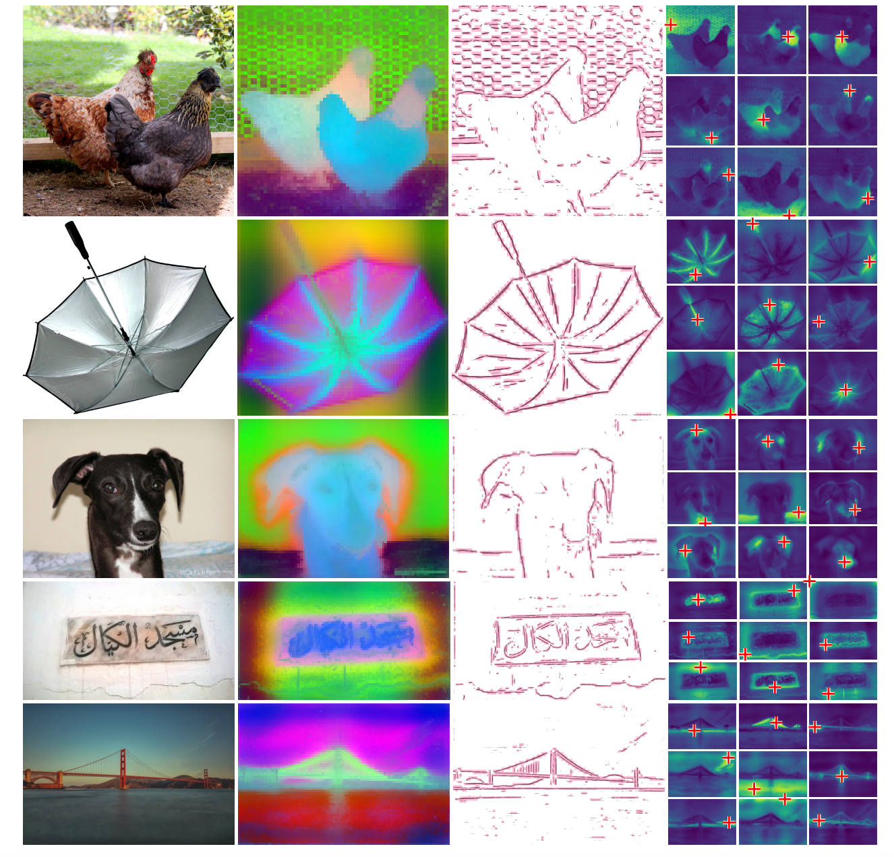
assets/teaser_crop.png)边界中心掩码建模的总览。每一行从左到右:输入图像;冻结教师 patch token 的 PCA 投影;经 a-contrario 校验得到的 boundary token(粉色),叠加在所有通过校验的线段候选的累积响应上;以及 9 个 boundary-token query(红叉,按特征空间最远点采样选取)与全部 patch token 的余弦相似度图。论文图注原文:"LingBot-Vision learns dense representations via boundary-centric masked modeling... The learned representations carry both semantic grouping and geometric structures. Input images are at 1024px for the short side."——这张图同时展示了论文要交付的两样东西:语义分组(PCA 颜色块)与几何结构(边界 token 与相似度图)。论文 §1 开篇给出一段纲领性表述:"Visual intelligence is not only about recognizing what is in an image, but also about recovering the dense spatial structure that makes the physical world measurable, navigable, and actionable."——这句话把「可测量、可导航、可操作」作为视觉智能的落地标准,而这三个词恰好都是机器人学的语言。这解释了这篇技术报告为什么出自一家机器人公司(蚂蚁灵波 Robbyant):它的目标不是刷 ImageNet,而是给下游的操作(manipulation)与深度补全提供一个带几何感知的视觉基座。
论文 §3.2 给出关键论证,这也是整套方法的事実基础:
"A semantic codeword encodes no explicit geometry and is weakest where two or more regions meet, so standard reconstruction under-supervises exactly the boundary tokens we force into the mask; the categorical geometric target supplies the missing signal."
以 iBOT 这类 latent 重建目标为例:它把 patch 特征投进一个语义码本(codebook),让 student 重建被掩码 token 的码本索引。问题在于码本索引是语义的——同一只狗的背部 patch 和边缘 patch,码本都可能归到同一类。于是恰好是两个物体交界处的 patch 最难学,而随机掩码又很少命中这些位置。
码本的条目是有限的(Table 2 里 DINOv3 的 iBOT prototype 也只有 96k),它不可能为「从猫过渡到背景」这种局部几何过渡留一个码字。结果就是边界 token 的信号被平均掉,模型学到的是「整块区域的语义」而非「区域的形状」。
论文 §3.3 专门论证了这个问题:"An edge map... marks photometric discontinuity pixel by pixel, may seem the more general choice. The trouble is that edge pixels can hardly be validated"——边缘图逐像素标注光度不连续,但无法做校验(每个边缘像素都是一个孤立事件,没有整体结构可以检验)。线段则不同:它有一个整体的、可被 a-contrario 判据检验的几何假设。这个「可校验性」是整条边界发现管线的支点。
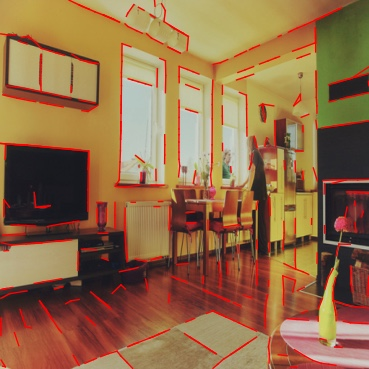
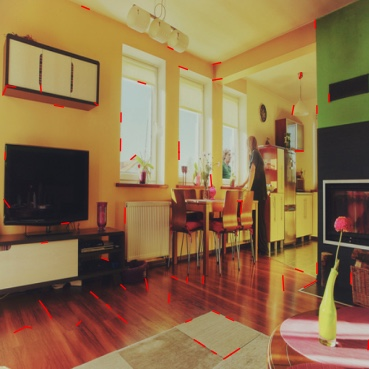
| 符号 | 含义 | 取值 / 维度 | 出处 |
|---|---|---|---|
| $p$ | 像素(场坐标) | — | §3.3 |
| $\ell$ | 线段 | — | §3.3 |
| $a(p)$ | 像素 $p$ 处的 boundary field 四元组 | $(d_p,\theta_p,\phi^1_p,\phi^2_p)$ | 式 (5) |
| $d_p$ | $p$ 到最近线段 $\ell$ 的距离 | 截断到支撑宽度 | §3.3 |
| $\theta_p$ | 线段 $\ell$ 的方向角 | $[0,\pi)$ | §3.3 |
| $\phi^1_p,\phi^2_p$ | 从 $p$ 看向线段两端点的方位角 | $[0,2\pi)$ | §3.3 |
| $\mathcal{B}$ | boundary token 集合(被边界穿过的 patch) | 式 (5) | 式 (5) |
| $\mathcal{M}^+$ | 强制并集掩码集 | $\mathcal{M}\cup\mathcal{B}$ | 式 (6) |
| $K$ | 每通道的离散 bin 数 | 32(概念验证时为 128) | §4.3 |
| $\tau_\ell$ | 软标签温度 | 窄(§3.3) | 式 (8) |
| $\delta^c$ | 第 $c$ 个通道的环形距离 | 角度通道用环形距离 | 式 (8) |
| $\lambda_i,\lambda_b,\lambda_k$ | iBOT / boundary / KoLeo 权重 | $1,1,0.1$ | 式 (10) |
| $\epsilon$ | a-contrario 显著性阈值 | 1 | 附录 |
| $\tau_d$ | 场分辨率下的距离阈值 | 5 px | 附录 A |
| $\pi/16$ | 方向对齐容差 | $\pi/16$(比 LSD 的 $\pi/8$ 更严) | 附录 A |
把「稀疏的线段集合」升维成「稠密的像素级场」,而且故意做得高度冗余:支撑区域内任何一个像素,都携带足以重建整条线段的全部信息。这个冗余是后面「投票聚合」「在线启动」两个步骤能成立的前提。
论文 §3.3 的核心设计。把图像边界建模为直线段(曲线边界 = 短线段链),然后对每个靠近线段的像素 $p$,存它到线段的距离和三个定位角:
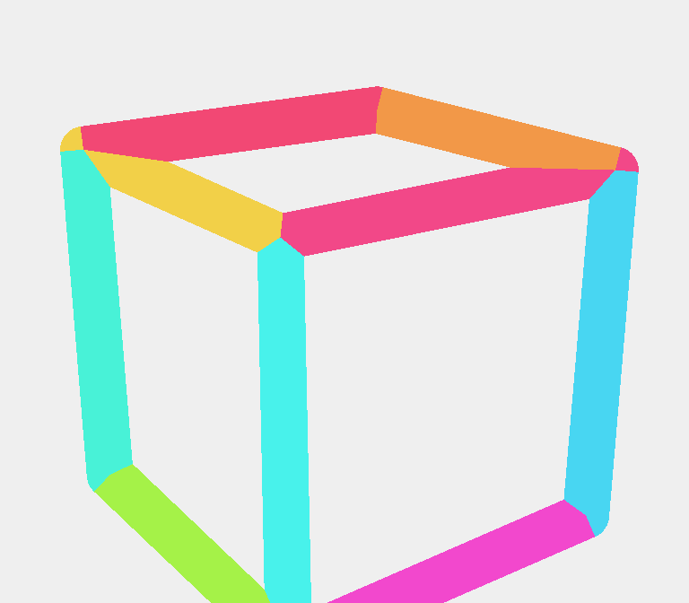
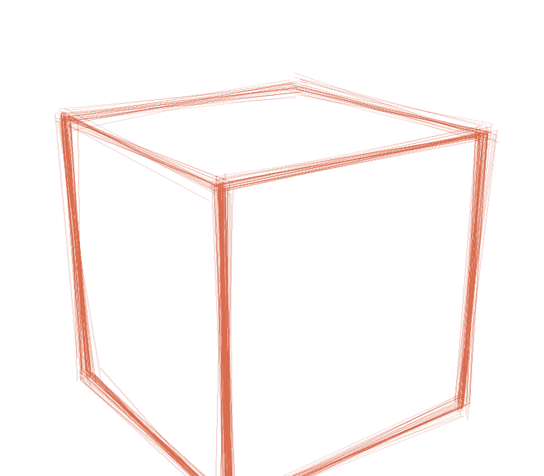
四个通道各自被离散化成 $K=32$ 个 bin,把回归问题变成分类问题(论文称 "categorical reparameterization")。第 $c$ 个通道的软标签是围绕真值 bin 的高斯:
监督信号是对四个通道分别求交叉熵再相加:
这是整套方法里工程上最精巧的部分:监督信号不是从外部检测器来的,而是从教师自身的噪声预测里「长」出来的。整条管线分四步,其中第三步(投票聚合)和第四步(a-contrario 校验)是把「噪声场」变成「干净目标」的关键。
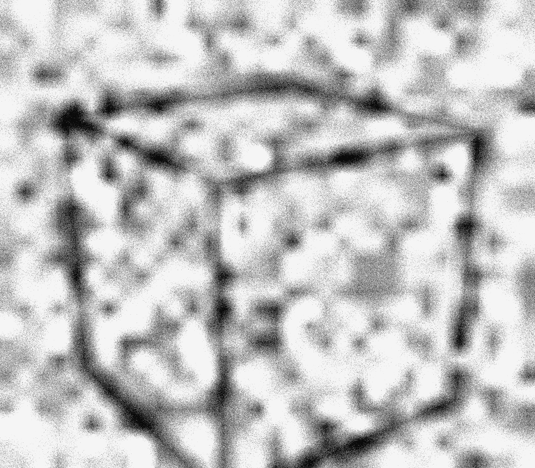
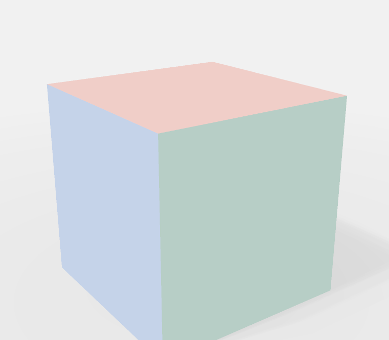
校验的思想是「假设检验」:如果一个线段候选只是「噪声的偶然对齐」,它应该能通过一个极低阈值的检验被淘汰。具体实现用 NFA(Number of False Alarms):
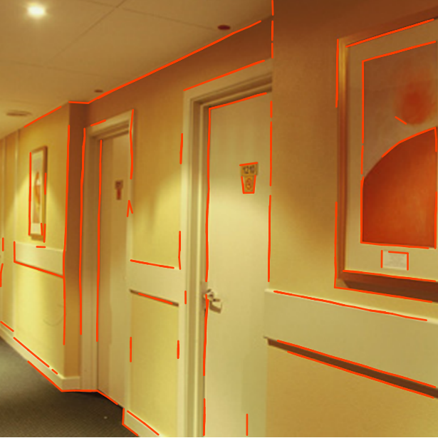
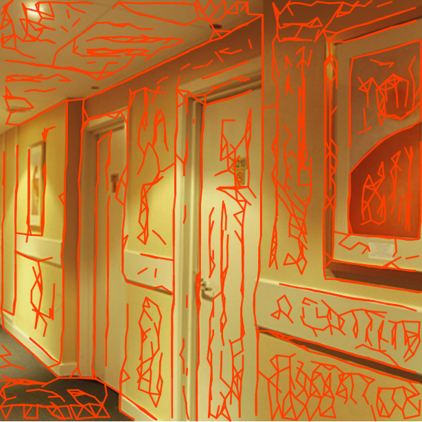
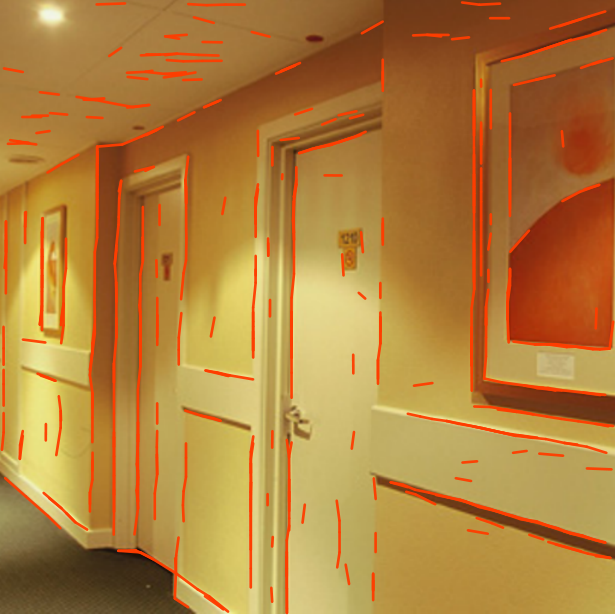
figures/hat_sampling_lsd/ 与 figures/hat_sampling_wolsd/——lsd 指「θ 通道用经典 LSD 的 level-line 方向做引导」,wolsd 指「全通道 U(0,1) 均匀随机」。这两个名字是 Figure 3 的图片目录名,不是训练超参。原文通篇没有 "hard attention" 或 "line segment detection loss" 这类提法;本笔记此前的草稿曾把这两个目录名误读为训练采样策略,经与原文逐字核对后更正——不要从资源文件名反推方法,是本库反复强调的一条纪律。
这是把「boundary field」接到「自监督预训练」上的接口:把边界 token 强制并入随机掩码集,让这些结构上最关键的位置成为 student 必须重建的对象。整个模块只有一个新符号 $\mathcal{B}$,但它的效果是把预训练的「注意力」从「整块区域」重新分配到「区域交界处」。
先定义边界 token——被任何一条预测边界穿过的 patch:
再把它并入随机掩码集:
最终的总目标是在 DINOv2 的基座上加上边界项:
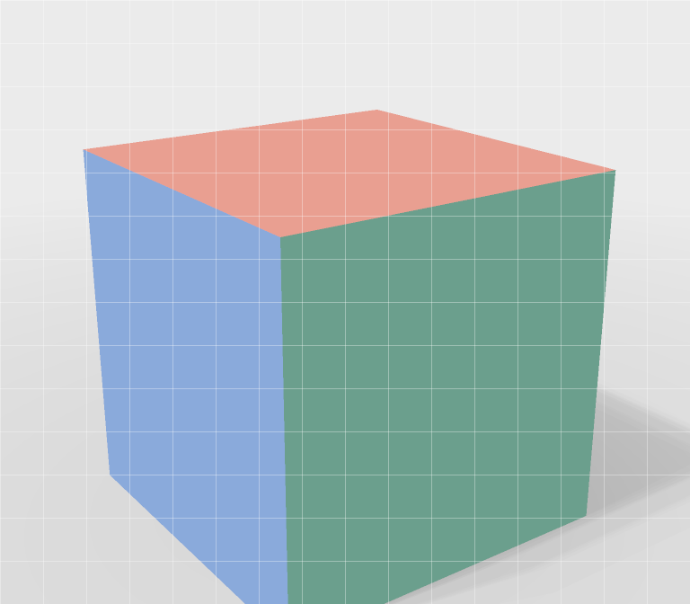
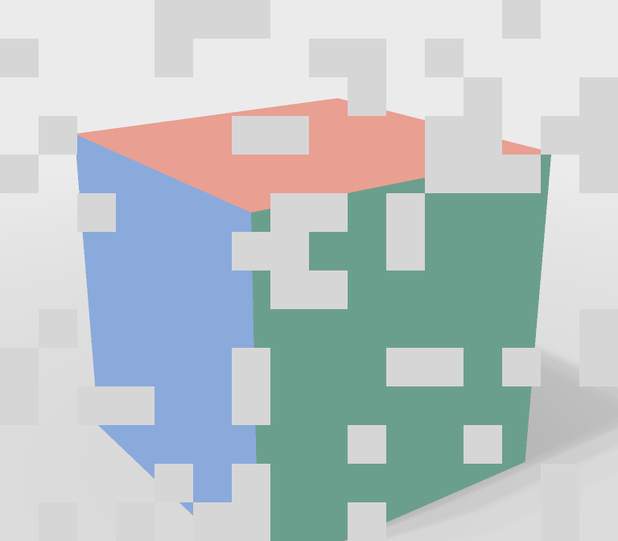
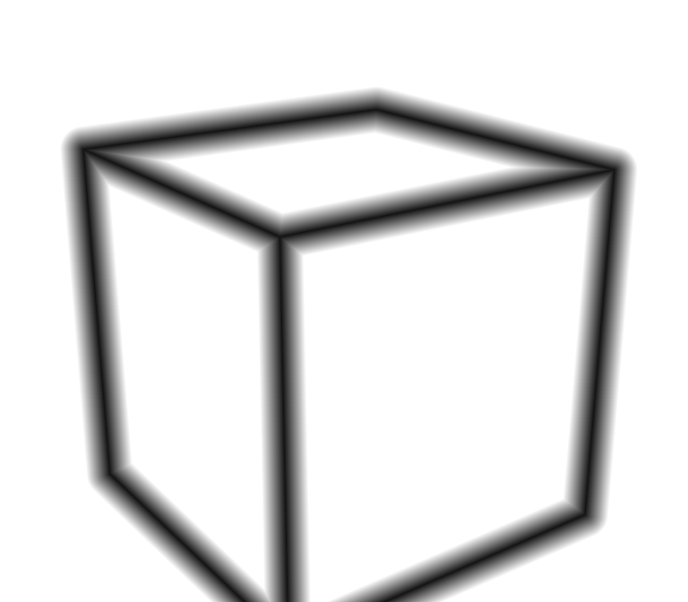
论文 §3.2 给出因果链:
这与 DINOv3 的 Gram anchoring 形成有趣的镜像:Gram 修的是「patch 间相关性的相对结构」,masked boundary modeling 修的是「哪些 patch 该被监督的空间分布」。两者都是在给 patch 级目标「补课」,只是一个补在损失项上,一个补在掩码分布上。
论文 §4.1 给出的配方——以 retrieval 为主,辅以四个公开/半公开数据集:
| 来源 | 规模 | 类型 | 说明 |
|---|---|---|---|
| retrieval-curated(3 个池合计) | ~143M | 检索自未筛选池 | 大 seed 用 $k$-NN,小 seed 用 cluster-based |
| ImageNet-21k | 13.15M | 原样入库 | 分类语料 |
| ImageNet-1k | 1.28M | 原样入库 | 分类语料 |
| GLDv2(clean) | 1.58M | 原样入库 | 地标识别 |
| Mapillary-SLS | 1.46M | 原样入库 | 街景定位 |
| 合计 | 160.75M | — | 约 5/6 为 retrieval-curated |
| 阶段 | 迭代数 | batch | 分辨率 | 备注 |
|---|---|---|---|---|
| 1. 预训练 | 300k | 3072 | global 256 / local 112 | 含 boundary 目标 |
| 2. Gram anchoring | 100k | 3072 | 同阶段 1 | 沿用 DINOv3 的做法(但权重调度不同) |
| 3. 高分辨率适配 | 100k | 3072 | 单一 512 px | DINOv3 用多分辨率,这里只用一个 |
与 DINOv3 的三阶段(1M / 100k / 30k,batch 4096)对照——预训练短了 3.3 倍,高分辨率适配反而长了 3.3 倍。论文明确给出理由:"Our budget is deliberately modest... in total, less than one third of the samples DINOv3 processes."
把旗舰 ViT-g 蒸馏成三档(§4.4),沿用 DINOv2/DINOv3 的「冻结教师替换 EMA 教师」做法:
| 档位 | 参数量 | 迭代数 | 高分辨率适配 | batch |
|---|---|---|---|---|
| ViT-L | 300M | 300k | +100k @ 512 px | 3072 |
| ViT-B | 86M | 300k | +100k @ 512 px | 3072 |
| ViT-S | 21M | 300k | +100k @ 512 px | 3072 |
| 损失 | 数学形式 | 权重 | 作用范围 | 出处 |
|---|---|---|---|---|
| DINO(图像级) | $\mathcal{L}_{\mathrm{DINO}}$:CLS 与 prototype 的交叉熵 | 1 | CLS token | 式 (10) |
| iBOT(patch 级语义) | $\mathcal{L}_{\mathrm{iBOT}}$:随机掩码的 latent 重建 | $\lambda_i=1$ | 掩码 token | 式 (10) |
| boundary(几何) | $\mathcal{L}_{\mathrm{bnd}}=-\frac{1}{|\mathcal{B}|}\sum_{p\in\mathcal{B}}\sum_c \bar y^c(p)^\top\log\hat y^c(p)$ | $\lambda_b=1$ | 仅 boundary token $\mathcal{B}$ | 式 (9) |
| KoLeo(分散度) | $\mathcal{L}_{\mathrm{KoLeo}}$ | $\lambda_k=0.1$ | 全局 | 式 (10) |
| 项目 | 取值 | 出处 |
|---|---|---|
| 类型 | 三层 per-token MLP | §4.3 |
| head dim | 512 | §4.3 |
| 输出步长 $s$ | 2 | §4.3 |
| 每通道 bin 数 $K$ | 32 | §4.3 |
| 每 token 输出维数 | $4\times K=128$ 个 logit | 由 4 通道 × 32 bin 推出 |
| 角点检测器 | 冻结的单块 ViT | §3.4 |
Robbyant/lingbot-vision 的下载副本(位于本工作区 .tmp_vision/src_lbv/),含 4 份 yaml、vit.py 等核心文件。下文 file:line 均为该副本中的实际行号。lbot_vision/vit.py)| 位置 | 事实 |
|---|---|
vit.py:71 | class LingBotVisionTransformer——主干类定义 |
vit.py:76 | patch_size=16(与 DINOv3 一致) |
vit.py:78 | pos_embed_rope_base=100.0 |
vit.py:81 | pos_embed_rope_normalize_coords="separate" |
vit.py:85 | pos_embed_rope_dtype="bf16"(默认)【注意】——与 DINOv3 的 fp32 不同,见下方讨论 |
vit.py:86 | embed_dim=768(默认,对应 B 档;g 档为 1536) |
vit.py:88 | num_heads=12(默认) |
vit.py:97 | n_storage_tokens=0(默认;yaml 里显式设为 4) |
vit.py:127 | self.storage_tokens(register tokens 的实现) |
vit.py:128 | class RopePositionEmbedding |
vit.py:25 | SwiGLUFFN(Giant 档用) |
vit.py:19, 63 | LayerScale |
四份 yaml(lbot_vision_vitg.yaml / vitl / vitb / vits)的差异高度集中——只有 Giant 档换 FFN 类型和 QKV 偏置:
| 键 | ViT-g(旗舰) | ViT-L / B / S |
|---|---|---|
arch | vit_giant2 | vit_large / vit_base / vit_small |
ffn_layer | swiglu | mlp(标准 MLP) |
qkv_bias | false | true |
norm_layer | layernormbf16 | layernormbf16(同) |
layerscale | 1.0e-05 | 1.0e-05(同) |
num_register_tokens | 4 | 4(同) |
pos_embed_rope_base | 100.0 | 100.0(同) |
pos_embed_rope_normalize_coords | separate | separate(同) |
pos_embed_rope_rescale_coords | 2 | 2(同) |
pos_embed_rope_dtype | fp32 | fp32(同,yaml 显式覆盖默认值) |
crops.global_crops_size | 512 | 512(同) |
vit.py:85 里 pos_embed_rope_dtype 的类默认值是 "bf16",但四份发布 yaml 都显式覆盖成 fp32;而 DINOv3 的 dinov3_vit7b16_pretrain.yaml 里 pos_embed_rope_dtype: fp32 是直接写死的。gram_loss.py:50-51)升到了 fp32——「几何相关的数值计算不能省精度」是两个团队的一致工程判断。requirements.txt,仅 7 个)torch
torchvision
numpy
opencv-python-headless
pillow
omegaconf
huggingface_hub极简——没有 detectron2、timm 这类重依赖;OpenCV 仅用于图像 IO(opencv-python-headless 无 GUI 依赖,适合服务器)。
| 维度 | LingBot-Vision | 对照 DINOv3(教师) |
|---|---|---|
| 预训练样本量 | 300k×3072 ≈ 9.2 亿样本 | 1M×4096 ≈ 40.96 亿(约 4.4 倍) |
| 三阶段总样本量 | (300k+100k+100k)×3072 ≈ 15.4 亿 | (1M+100k+30k)×4096 ≈ 46.3 亿(约 3 倍) |
| 高分辨率策略 | 单一 512 px | 多分辨率 {512,768} |
| GPU 型号 | 论文未明确给出 | 256 × H100-SXM5 |
| 碳排 | 论文未披露 | 18 tCO₂eq(教师) |
pca_demo.py),完整的 boundary 发现管线与 a-contrario 校验并未在仓库中以可运行脚本形式给出。【待核实】这意味着「复现预训练」目前只能按论文 §3.4 / 附录 A 的描述自行实现。pos_embed_rope_dtype: fp32,不能依赖代码默认的 bf16。| 分组 | 方法 | 参数 | NYUv2 ↓ | KITTI ↓ | ADE20k ↑ | Citysc. ↑ | VOC ↑ |
|---|---|---|---|---|---|---|---|
| > 2B | Web-DINO | 7B/14 | 0.466 | 3.158 | 42.7 | 68.3 | 76.1 |
| DINOv3 | 7B/16 | 0.309 | 2.346 | 55.9 | 81.1 | 86.6 | |
| V-JEPA 2.1 | 2B/16 | 0.307 | 2.461 | 47.9 | 73.5 | 85.0 | |
| PEcore | 2B/14 | 0.590 | 4.119 | 38.9 | 61.1 | 69.2 | |
| < 2B | AM-RADIOv2.5 | 1B/14 | 0.340 | 2.918 | 53.0 | 78.4 | 85.4 |
| DINOv2 | 1B/14 | 0.372 | 2.624 | 49.5 | 75.6 | 83.1 | |
| DINOv3 ViT-H+ | 0.8B/16 | 0.352 | 2.635 | 54.8 | 79.5 | 85.8 | |
| SigLIP 2 | 1B/16 | 0.494 | 3.273 | 42.7 | 64.8 | 72.7 | |
| V-JEPA 2.1 | 1B/16 | 0.350 | 2.601 | 47.8 | 71.8 | 84.7 | |
| < 2B | LingBot-Vision(本文) | 1B/16 | 0.296 | 2.552 | 53.5 | 79.6 | 87.5 |
| 方法 | 参数 | DAVIS-S | YT VOS-S |
|---|---|---|---|
| DINOv3 | 7B/16 | 71.1 | 74.1 |
| V-JEPA 2.1 | 2B/16 | 69.0 | 72.7 |
| PEspatial | 2B/14 | 68.4 | 68.5 |
| AM-RADIOv2.5 | 1B/14 | 66.5 | 70.1 |
| DINOv3 ViT-H+ | 0.8B/16 | 71.1 | 74.0 |
| V-JEPA 2.1 ViT-g | 1B/16 | 68.1 | 72.3 |
| DINOv2 | 1B/14 | 63.9 | 65.6 |
| LingBot-Vision(本文) | 1B/16 | 70.0 | 73.5 |
协议:冻结特征 + training-free label propagation;patch 16 用 480 px,patch 14 用 420 px 短边。LingBot-Vision 在 <2B 组里逼近但未超过 DINOv3 ViT-H+(70.0/73.5 vs 71.1/74.0),与 7B DINOv3 的差距也只有 1.1/0.6 个点。这与 DINOv3 的 Table 5(同任务)数字一致,两篇论文用的是同一套协议。
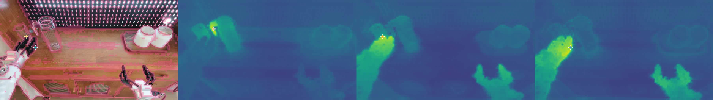
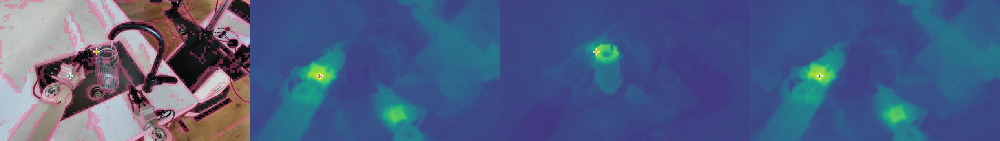
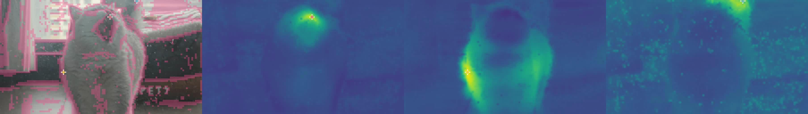
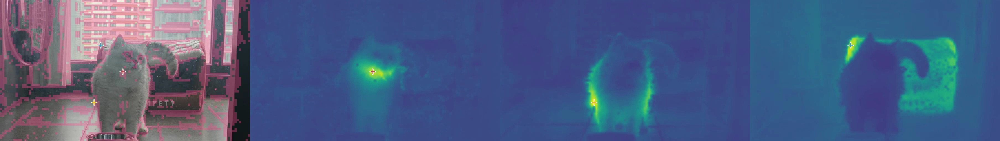
这是本篇与 DINOv3 的 Figure 13 直接对位的一组图——两者都是「同一套 PCA 流程,逐模型一列」的冻结特征可视化。但 LingBot-Vision 把对照组扩到了 6 个(含输入),并且图注里没有批评 DINOv3,只点名批评了 DINOv2 / SigLIP 2 / V-JEPA 2.1:
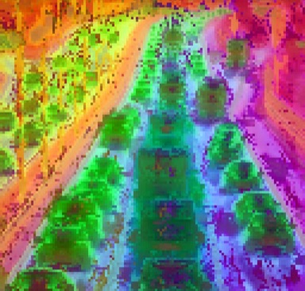
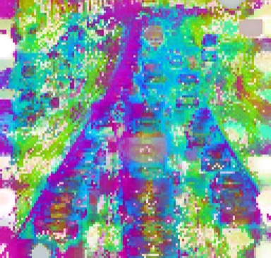
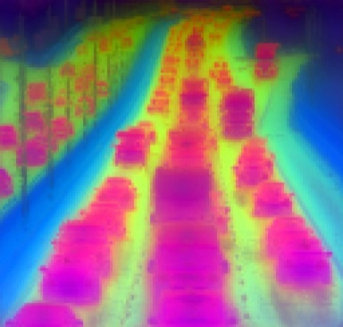
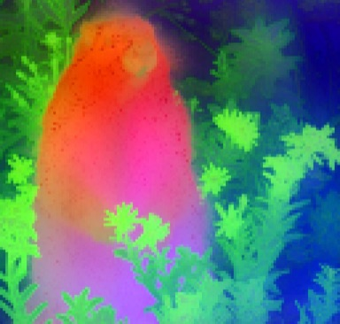
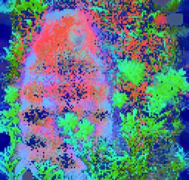
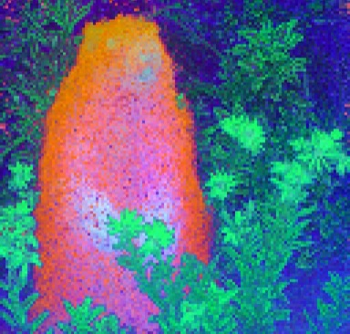
| 模型 | IN-1K Linear | IN-1K k-NN |
|---|---|---|
| LingBot-Vision(本文) | 86.32 | 83.39 |
| DINOv2 | 87.00 | 83.68 |
| DINOv3 | 87.87 | 85.68 |
| Franca | 84.50 | 81.11 |
| SigLIP2 | 87.33 | 84.75 |
LingBot-Vision 在 ImageNet 上略低于 DINOv3(86.32 vs 87.87)与 SigLIP 2(87.33),与 DINOv2 接近(87.00)。这是预料之中的——boundary 目标是为稠密/几何任务加的,不是为分类加的。关键是它没有掉:与「只加边界监督会牺牲语义」的担忧相反,Table 1 的概念验证显示分类反而微涨。
| 档位 | 模型 | IN-Linear | IN-KNN | NYU ↓ | KITTI ↓ | ADE ↑ | VOC ↑ | City ↑ |
|---|---|---|---|---|---|---|---|---|
| L | DINOv2 | 86.43 | 83.82 | 0.411 | 3.243 | 48.63 | 83.54 | 74.51 |
| DINOv3 | 87.31 | 85.27 | 0.351 | 2.643 | 55.00 | 88.11 | 79.28 | |
| SigLIP2 | 85.67 | 82.91 | 0.516 | 3.641 | 42.99 | 75.55 | 62.51 | |
| Franca | 82.50 | 71.70 | 0.425 | 3.613 | 45.93 | 84.42 | 72.42 | |
| V-JEPA2.1 | — | — | 0.346 | 2.617 | 46.29 | 84.81 | 71.58 | |
| LingBot-Vision | 86.38 | 83.62 | 0.310 | 2.574 | 52.75 | 87.40 | 78.75 | |
| B | DINOv2 | 84.27 | 82.17 | 0.429 | 3.416 | 48.25 | 83.81 | 74.19 |
| DINOv3 | 84.79 | 83.21 | 0.371 | 2.826 | 51.74 | 88.20 | 77.30 | |
| SigLIP2 | 82.47 | 79.47 | 0.539 | 3.847 | 40.49 | 73.50 | 60.12 | |
| Franca | 78.45 | 63.45 | 0.462 | 3.790 | 42.69 | 82.79 | 71.65 | |
| V-JEPA2.1 | — | — | 0.410 | 2.883 | 41.38 | 78.00 | 64.99 | |
| LingBot-Vision | 85.05 | 82.32 | 0.339 | 2.793 | 51.44 | 87.10 | 77.17 | |
| S | DINOv2 | 80.76 | 79.11 | 0.447 | 3.568 | 44.86 | 82.34 | 71.44 |
| DINOv3 | 80.37 | 79.33 | 0.405 | 2.851 | 46.51 | 84.30 | 73.38 | |
| LingBot-Vision | 82.22 | 78.98 | 0.383 | 3.784 | 47.01 | 84.17 | 64.34 |
这是这篇技术报告的「落地闭环」——把 LingBot-Vision 当作 LingBot-Depth 2.0 的编码器初始化,训练 masked depth modeling(MDM)管线。两张表分别对应「真实传感器」与「掩码/稀疏输入」:
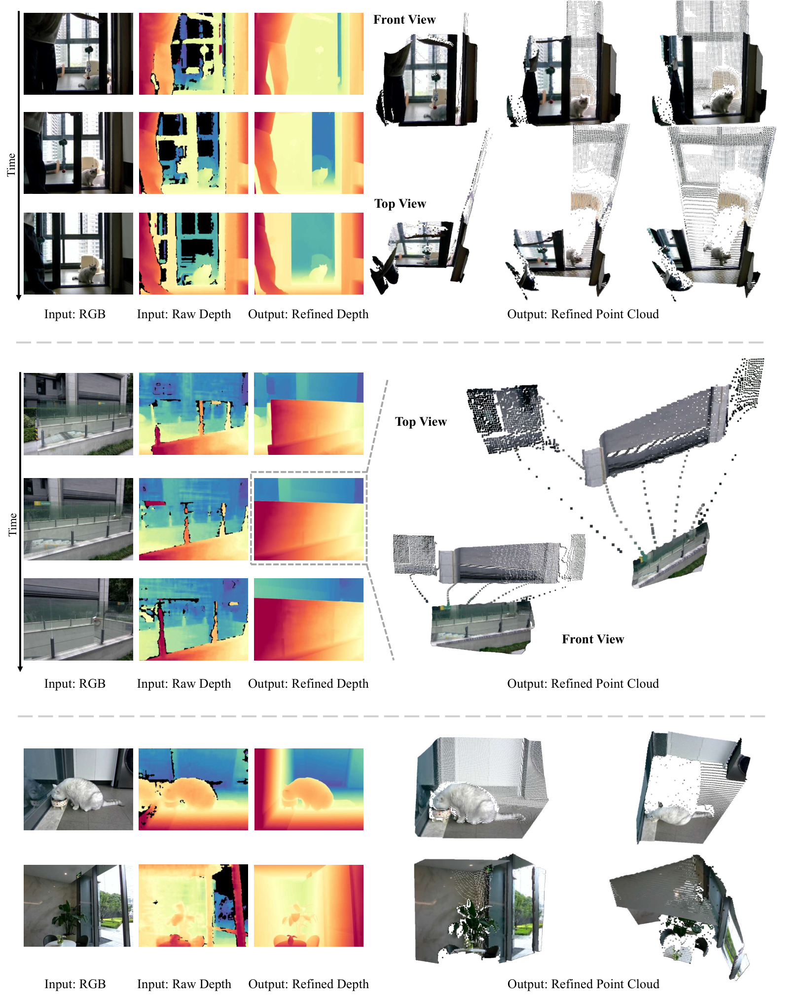
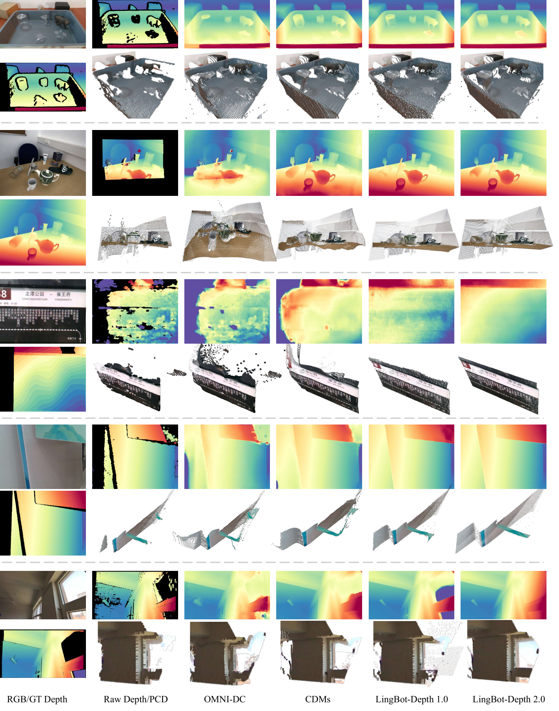
这是全篇最干净的一张消融——在 ImageNet-1K 上用 ViT-L/16,固定 DINO+iBOT 基线,逐项叠加组件。它直接回答了「增益到底来自哪一项」:
| 配置 | IN-1K k-NN ↑ | NYUv2 δ₁ ↑ | NYUv2 RMSE ↓ |
|---|---|---|---|
| DINO+iBOT baseline | 81.6% | 81.4% | 0.474 |
| + categorical boundary target(仅几何) | 81.8% | 84.4% | 0.446 |
| + dual supervision(boundary token 上也加 iBOT) | 82.0% | 84.7% | 0.443 |
| + RoPE backbone(最终配方) | 82.4% | 84.9% | 0.440 |
| w/ boundary forcing,但只有语义目标(对照) | 81.4% | 81.2% | 0.481 |
这张图回答的是「换个编码器初始化,在下游数据越来越多时会怎样」。协议是固定同一套 MDM 管线,只改 encoder 初始化(LingBot-Vision vs DINOv2),训练集从 3M 涨到 150M:
| 训练集规模 | DINOv2 初始化 D₁₀₂ ↑ | LingBot-Vision 初始化 D₁₀₂ ↑ |
|---|---|---|
| 3M | 0.752 | 0.777 |
| 20M | ~0.752(平台) | 持续上升 |
| 150M | 0.755(饱和) | 0.795 |
固定同一套 MDM 管线,只换 encoder 初始化,在 block-masked 与 sparse 深度输入上评估:
| 初始化 | 架构 | DIODE-In RMSE↓ | DIODE-Out RMSE↓ | 备注 |
|---|---|---|---|---|
| DINOv2 | ViT-L/14 | 0.152 / 0.981 | 3.192 / 0.775 | — |
| DINOv3 | ViT-L/16 | 0.114 / 0.988 | 3.065 / 0.735 | — |
| LingBot-Vision | ViT-L/16 | 0.094 / 0.990 | 2.771 / 0.794 | ViT-L 档全面最强 |
| DINOv2 | ViT-g/14 | 0.118 / 0.990 | 2.778 / 0.809 | — |
| LingBot-Vision | ViT-g/16 | 0.083 / 0.993 | 2.440 / ... | ViT-g 档多数领先 |
单元格格式为 RMSE↓ / D₁₀₅↑。论文表注:"The LingBot-Vision initialization is the strongest starting point at ViT-L across the board and on the majority of benchmarks at ViT-g, where DINOv2 keeps an edge on the Hammer captures."——注意论文诚实承认了例外:ViT-g 档的 Hammer 真实传感器捕获上 DINOv2 仍有优势。
下表按同一组维度横评 8 个候选基座,与 DINOv3 笔记 §14 的表格互为镜像——两张表用的是同一批对手,只是主角互换。
| 方法 | 范式 | 参数量 | patch | 训练数据 | NYUv2↓ | ADE20k↑ | 迭代×batch | 几何目标 |
|---|---|---|---|---|---|---|---|---|
| LingBot-Vision | 自监督 + masked boundary modeling | 1.1B (ViT-g/16) | 16 | 160.75M(自建) | 0.296 | 53.5 | 300k+100k+100k × 3072 | 显式(boundary field) |
| DINOv3 | 自监督(DINO+iBOT+KoLeo) + Gram anchoring(事后) | 6.7B (7B/16) | 16 | LVD-1689M(私有) | 0.309 | 55.9 | 1M+100k+30k × 4096 | 隐式(事后约束) |
| DINOv2 | 自监督(DINO+iBOT) | 1.1B (g/14) | 14 | LVD-142M(私有) | 0.372 | 49.5 | — | 无 |
| V-JEPA 2.1 | 视频自监督(JEPA) | 2B (G/16) | 16 | 视频为主 | 0.307 | 47.9 | — | 隐式(视频时序) |
| AM-RADIOv2.5 | 蒸馏式聚合(从 SAM 等) | 1B (g/14) | 14 | 多教师 | 0.340 | 53.0 | — | 间接(SAM 蒸馏) |
| PEspatial | 弱监督(Perception Encoder 空间版) | 2B (G/14) | 14 | 图文 + 视频蒸馏 | 0.362 | 49.3 | — | 间接 |
| SigLIP 2 | 弱监督(图文对比) | 1B (g/16) | 16 | 40B+ 图文对 | 0.494 | 42.7 | — | 无 |
| Web-DINO | 自监督(DINO,公开数据复现) | 7B (/14) | 14 | 网络公开图文 | 0.466 | 42.7 | — | 无 |
NYUv2 / ADE20k 数据统一引自 LingBot-Vision 论文 Table 2(冻结线性探测口径)。patch 16 与 patch 14 的 token 数差异的注意事项,与 DINOv3 笔记 §14 所述相同。
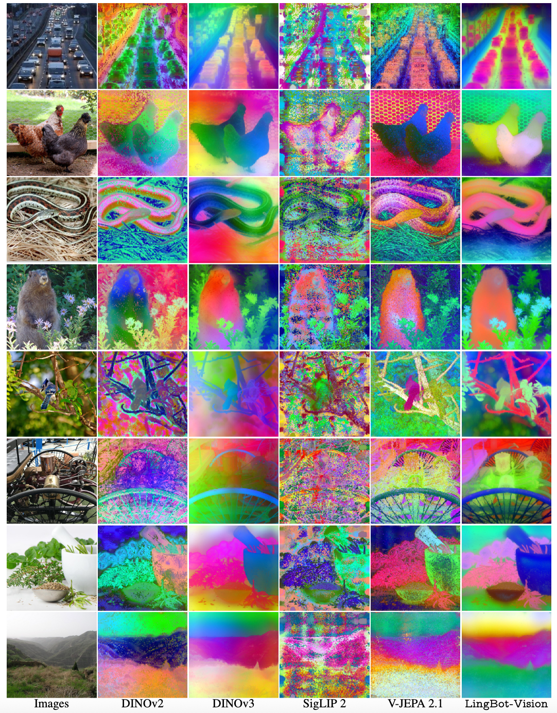
assets/pca_crop.png)八行场景 × 六模型的完整 PCA 对照网格。列从左到右:Images(输入)→ DINOv2 → DINOv3 → SigLIP 2 → V-JEPA 2.1 → LingBot-Vision(最右)。与上文图8/图9 是同一组图的全量版本——本篇笔记里 l13-l18(交通)、l19-l24(土拨鼠)是其中两行的逐列切分。通览全网格可以更清楚地看到一个系统规律:LingBot-Vision 列的颜色块边界最锐利、区域最连贯,而 SigLIP 2 列几乎在所有行都退化成块状噪声。DINOv3 列(第 3 列)介于两者之间——明显好于 DINOv2/SigLIP 2,但边界锐度不及 LingBot-Vision。前馈式重建(3DGS / VGGT 系)有一个公认的经典失败区:镜面、玻璃、反光地板——这些表面对多视图几何是灾难(深度传感器在这里直接缺测,MVS 匹配在这里产生错误对应),而恰是室内场景的高频元素。LingBot-Vision 的下游联动 LingBot-Depth 2.0 给出的证据,直接命中这个失败区:
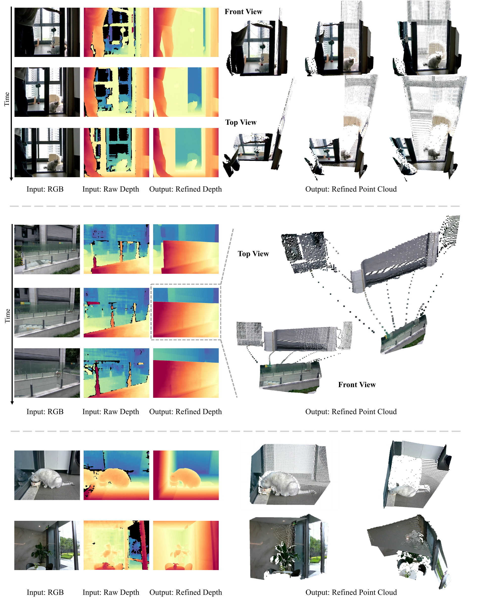
两篇都是「前馈重建可复用的视觉基座」,但适配的场景不同。下表按本库关心的维度横向对照(详细数据分别见 DINOv3 笔记 §15 与本篇 §12/§13):
| 维度 | DINOv3(2508.10104) | LingBot-Vision(2607.05247) | 对前馈重建的建议 |
|---|---|---|---|
| 核心增益轴 | Gram anchoring:救语义分割 / 长训练稳定性 | masked boundary modeling:救深度 / 边界 / 空间对应 | 重建瓶颈在几何 → 倾向 LBV |
| NYUv2 深度(冻结) | 0.309(7B 教师) | 0.296(1.1B)/ 0.310(0.3B 蒸馏) | LBV 参数效率碾压 |
| ADE20k 语义分割 | 更强(Gram 主要收益区,+5.4) | 略差(差 ~2 mIoU,§13 落差①) | 若重建需语义先验 → DINOv3 |
| 已验证的前馈重建接入 | ✅ VGGT 换编码器 AUC 86.3/89.6(Tab.13);冻结特征全面胜 DAv2(Tab.12) | 【待核实】未在 VGGT 类管线公开验证 | DINOv3 有现成证据链 |
| 数据 / 训练成本 | LVD-1689M,1M+100k+30k 迭代 × batch 4096(256×H100) | 160.75M,300k/100k/100k × batch 3072(< 1/3 样本) | 复现友好度 LBV 更高 |
| 开源 / 许可 | 权重公开,但 7B 需申请;Meta 自定义许可 | Apache-2.0,权重 / 代码公开,商用友好 | 商用 / 二次开发 LBV 更省心 |
| 高分辨率适配 | 10k 迭代专门高分辨率微调 + RoPE-box jittering | 未做同等激进的高分辨率适配 | 高分辨率场景 DINOv3 更成熟 |
| # | 开放问题 | 现状 | 对本库 / 复现的影响 |
|---|---|---|---|
| 1 | 完整预训练管线未开源 | 仓库只给模型定义 / 加载 / PCA 演示;boundary 发现管线与 a-contrario 校验无运行脚本 | 「复现预训练」只能按 §3.4 / 附录 A 自行实现,成本极高 |
| 2 | a-contrario 超参是手工定的 | $\epsilon=1$、容差 $\pi/16$、$\tau_d=5$px、$N_t=(HW)^{5/2}$ 全是经验值,论文未给敏感性分析 | 换数据域时这组阈值可能要重调,【待核实】 |
| 3 | boundary × Gram 的 2×2 消融没做 | DINOv3 加 Gram、LBV 加 boundary,但没人做「两个都加 / 各退一步」的交叉消融 | 无法判断两条增益轴是否可叠加 → 值得本地做 |
| 4 | 强制掩码与几何目标的耦合未分离 | 「把边界 token 塞进掩码集」与「用 boundary field 做重建目标」是同一个设计的两面,论文未拆 | 不确定增益主要来自掩码策略还是重建目标 |
| 5 | 未验证 7B 级尺度 | 最大只做到 1.1B(ViT-g);DINOv3 已到 7B | 「boundary 目标在更大尺度是否仍有边际收益」是开放的 |
整条 pipeline 是单视图自监督,没有任何跨视图一致性约束(对比 VGGT 的多视图 token 交互)。这解释了 15.5 的落差②——它学的是「单图里边界长什么样」,不是「同一边界在另一张图里长什么样」。对前馈重建,这是最需要补的一块。
DINOv3 专门做了 10k 迭代的高分辨率微调 + RoPE-box jittering($s\in[0.5,2]$)来稳住大图外推;LingBot-Vision 论文未给出同等力度的方案。高分辨率重建(2K+)是它的潜在弱项。
DINOv3 提供 S21M/S+29M/B86M/L300M/H+840M + ConvNeXt 四档的完整蒸馏谱系;LingBot-Vision 只蒸了 L/B/S 三档,且跳过了 Gram 阶段。要部署到边缘端,可选档位明显更少。
论文摘要说 LingBot-Vision「7× fewer parameters than DINOv3」,但按精确参数量(1.1B vs 6.716B)算是 6.1×。这与本库 LiON-LoRA 笔记发现的「相对改进百分比错位」是同类问题——论文把表格数字二次加工成结论句时最易出错。引用时一律用复算值 6.1×。
把 LingBot-Vision 放进自监督视觉基座的演进脉络里,可以清楚看到「让 SSL 特征带上几何」这件事已经分化出三条互补路线:
早期 SSL(DINO / iBOT)追求对增强不变的语义表示;DINOv3 用 Gram 在长训练后约束语义不要漂移;LingBot-Vision 更进一步,直接把几何(边界)当作学习目标本身。演进的方向是:几何从「被牺牲」→「被约束」→「被主动学」。
LingBot-Vision 最精巧的一步是监督信号不来自外部标注或检测器,而是从教师自身的噪声预测里「长」出来(§5 四步管线)。这与 DINOv3 的 EMA teacher 一脉相承,但把「自蒸馏」推到了「自发现几何结构」的程度——用未训练好的模型自己造监督,再用它训练自己。
DINOv3 → 卫星高度图(WRI 合作);LingBot-Vision → LingBot-Depth 2.0。两篇都证明了「一个好的基座 + 一个垂直下游头」能直接产出 SOTA。对前馈重建的启示:与其从零训一个重建网络,不如选对基座 + 冻结特征 + 小头。
本工作由蚂蚁灵波科技(Robbyant)完成,共 9 位作者。【Tech report,不加会议 badge】arXiv 页 comments 字段仅标注 "Tech report, 31 pages",未声明投稿 / 接收任何会议,因此按本库规范不挂会议标签。作者中值得关注的是 Nan Xue——线段检测领域的知名学者(LSD、HAWP、DeepLSD 等一系列线段检测 / 线框解析工作的核心作者)。这解释了为什么本文的 boundary field 参数化、投票聚合与 a-contrario 校验会如此深入地借鉴经典线段检测(LSD / a-contrario 传统)的数学工具——这是把二十年线段检测功底注入自监督预训练的一次尝试。
| 资源 | 链接 | 状态 |
|---|---|---|
| arXiv 论文 | arxiv.org/abs/2607.05247 | ✅ 可访问(v1,2026-07-06) |
| 代码仓库 | github.com/robbyant/lingbot-vision | ✅ 开源(Apache-2.0) |
| 模型权重 | modelscope.cn/robbyant · GitHub Releases | ✅ 公开(ViT-S/B/L/g 四档) |
| 许可 | Apache-2.0 | ✅ 商用友好(对照 DINOv3:7B 权重需申请、Meta 自定义许可) |
| 下游联动 | LingBot-Depth 1.0 → 2.0(深度补全) | ✅ 论文 §6 / Figure 9-10 |
robbyant/lingbot-vision 的工作副本(位于本工作区 .tmp_vision/src_lbv/);所有 file:line(如 vit.py:85 的 pos_embed_rope_dtype 默认值)均可逐行核对。arxiv.org/html/2607.05247v1/ 下的原始相对路径下载(非猜测文件名),下载后做过双向 diff(笔记引用的 src 全集 vs images/2607.05247/ 文件全集)与 PNG/JPEG 文件头尾完整性校验。figures/hat_sampling_lsd/ 与 figures/hat_sampling_wolsd/ 是 Figure 3 的图片资源目录名(lsd = θ 通道用经典 LSD level-line 引导,wolsd = 全通道均匀随机),不是训练超参;原文通篇无 "hard attention" / "RECON" 提法。